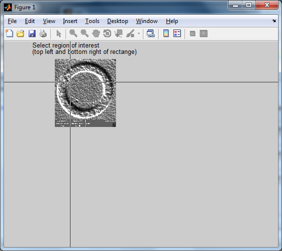
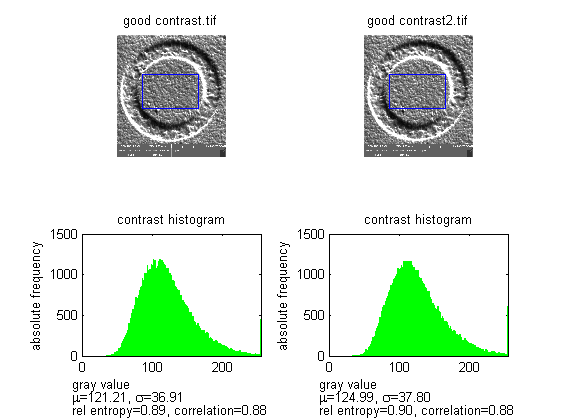
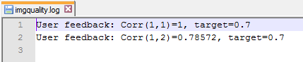
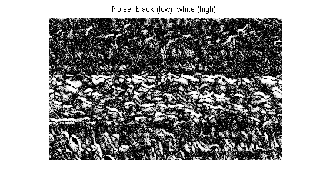
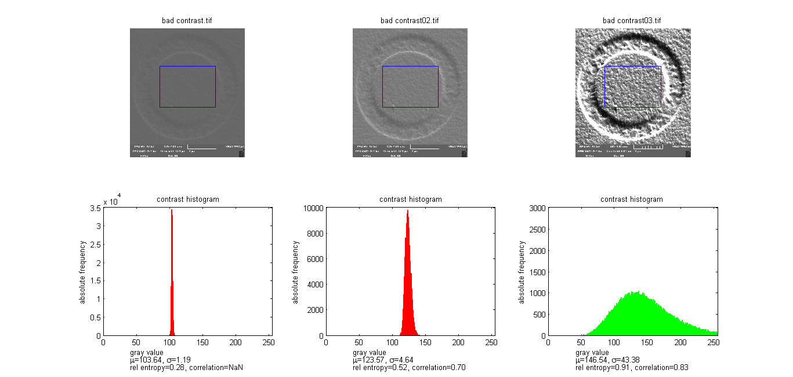
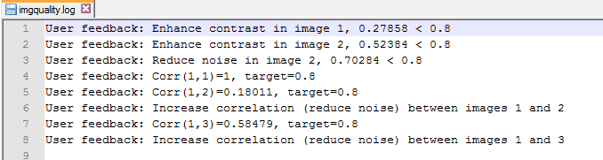
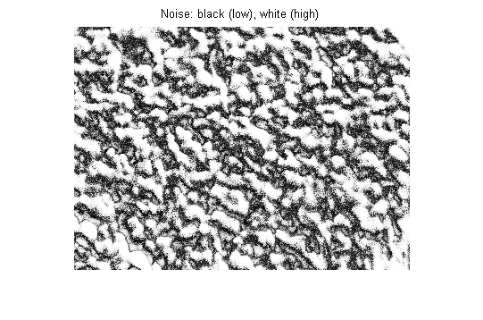

The image quality can be checked quickly by the user with few images (2-3) that are recorded before starting the actual experiment.
To start click the button 'Check image qualiy' in the main gui or type 'CheckImageQuality;' at the MATLAB command line and press 'ENTER'.

On the first image, the user should select the region of interest by marking upper left and bottom right corners of a rectangle.
The contrast (histogram), correlation (value in [0,1]) and relative entropy (value in [0,1]) within each single image are evaluated:

A green histogram indicates a good quality without further user action, while a red histogram stands for a bad quality that requires further user action.
The corresponding log file (imagequality.log) contains the correlations between the images (1 compared to others) and required user actions:

In this example no user action is required.
The noise (variance) between the images is also shown:

Another example requires some user actions:


